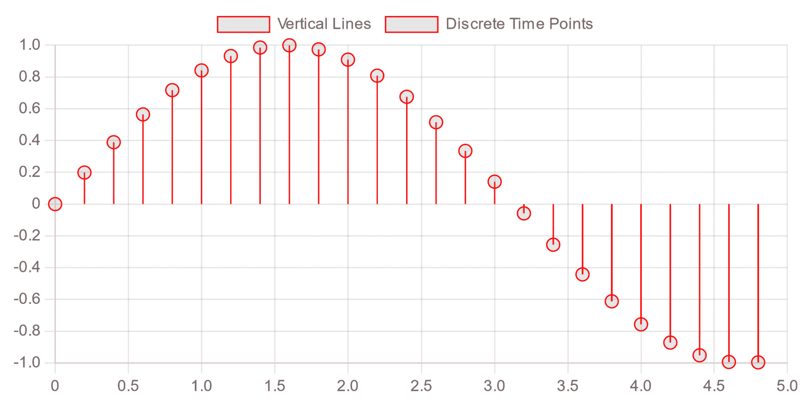
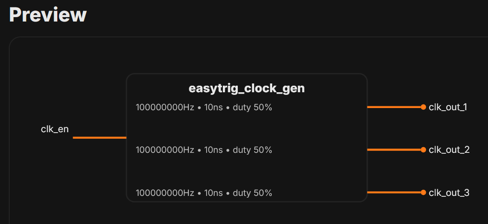

Phasor Sinusoid Plotter
Plot phasors as sinusoids from complex or mag/phase input.
SignalsPhasor

Complex Number Plotter
Visualize complex numbers as vectors and read magnitudes.
ComplexVectors
VHDL Entity/Testbench Generator
Create entities and testbenches with configurable ports and libs.
HDLVHDL

Phasor Calculator With Steps
Add, subtract, multiply, or divide phasors with step-by-step output.
PhasorSteps

Discrete Function Plotter
Plot discrete functions and manual points with optional best-fit.
SignalsDiscrete
Markdown to PDF
Live Markdown + MathJax preview with one-click PDF export.
DocsPDF

Testbench Clock Generator
Generate clocks for your FPGA testbench with customizable frequency and duty cycle.
HDL